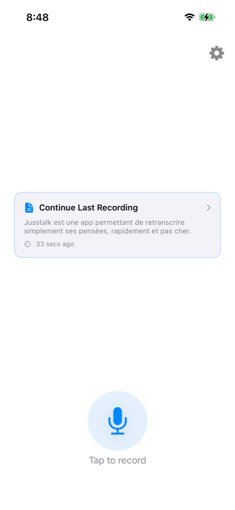
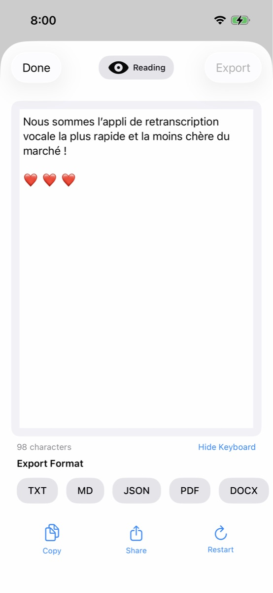
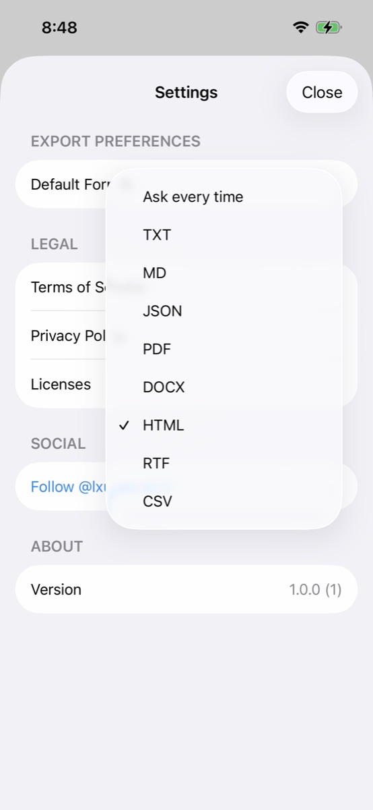

Transform recordings into perfect text with Jusstalk. The native iOS app designed for speed, privacy, and accuracy.



Powerful features wrapped in a simple, intuitive design.
Instantly start capturing with a single tap. Designed for those spontaneous moments of inspiration.
Leverages Voxtral-Mini-Transcribe-2507 to deliver industry-leading accuracy in multiple languages.
Share as PDF, Markdown, JSON, HTML, or CSV. Seamlessly integrates with your workflow.
Jusstalk doesn't just transcribe; it formats. It turns ramblings into structured notes with headings and bullet points.
Your data is yours. Audio is processed ephemerally and never stored on our servers. Local storage only.